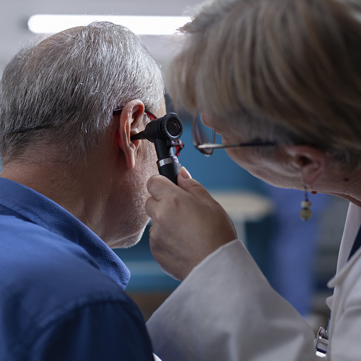

Módulo 2 | Aula 1 Promoção da saúde e prevenção de doenças: aspectos conceituais, políticas e ações na APS
Compreendendo a saúde
A reflexão sobre o conceito ampliado de saúde definido pela Organização Mundial de Saúde (OMS), especialmente no contexto da Atenção Primária à Saúde (APS), que relaciona saúde ao bem-estar humano, físico, mental e social, favorece uma maior compreensão da diferenciação entre a doença e o adoecimento, que possuem conotações diferentes. Clique nos cards para saber mais.

A doença é compreendida pelos profissionais de saúde, a partir da sintomatologia apresentada pelo indivíduo e seus exames.
O adoecimento é compreendido como a experiência da enfermidade vivida pelos pacientes, sobretudo àqueles portadores de uma condição crônica.
No livro “Experiência, saúde, cronicidade: um olhar socioantropológico”, Sílvia Portugal fala sobre a experiência do adoecimento. Segundo a autora:
format_quotea compreensão da experiência de adoecimento e de cronicidade convoca um conjunto complexo de elementos que não é fácil de desvendar. Se por um lado é impossível ignorar os contextos macrossociais e as temporalidades em que se inscreve a experiência individual (nomeadamente, as formas de organização social, econômica e cultural, a garantia de direitos de cidadania, os sistemas de saúde de cada território), por outro lado essa experiência tem uma dimensão única e subjetiva, que passa pela identidade pessoal, pela trajetória de vida, pela relação com os outros, com o corpo e com materialidades diversas.
PORTUGAL, 2021; p. 77
Além disso, alguns autores relatam que a definição proposta pela OMS não considera a existência de um gradiente de sanidade, mas acaba por manter a distinção de apenas dois estados opostos: de saúde e doença (FORATTINI, 1992; TERRIS, 1975).
Neste sentido, a salutogênese como uma orientação para os profissionais de saúde e para os serviços de saúde, vem suprir esta deficiência, ao promover uma mudança do enfoque de patogênese para a salutogênese.
Orientação voltada para as doenças. Parte do pressuposto que ter saúde implica em alcançar o completo bem estar e ausência de doenças durante a vida. Por isso foca na investigação daquilo que contribui para o surgimento da doença e utiliza recursos como medicamentos e exames para prevenir ou tratar doenças e sintomas apresentados. O enfoque da patogênese reforça o modelo biomédico no contexto da assistência à saúde.
Orientação voltada para os recursos em saúde e a saúde propriamente dita. O paradigma salutogênico foca na descoberta dos fatores que contribuem para que as pessoas vivam com melhores condições de saúde e qualidade de vida, a partir de sua realidade sóciocultural.
Para a salutogênese, o processo saúde-doença é visto como um processo contínuo, de partes de um mesmo “todo”, um gradiente, e não simplesmente como situações opostas de saúde x doença (em contraposição a essa dicotomia).
Essa orientação tem como objetivo fazer refletir e responder à seguinte pergunta: “O que mantém as pessoas saudáveis”? Busca compreender e promover os recursos internos dos indivíduos para lidar com os agentes estressores da vida, como já mencionado anteriormente. E, segundo o próprio autor, a salutogênese pode ser vista como uma base conceitual da promoção da saúde (ROJATZ et al., 2017; LANGELAND et al., 2017).
Acesse o site do Ministério da Saúde sobre formas de se manter mais saudável (vídeos, notícias, destaques e muito mais). Link: /